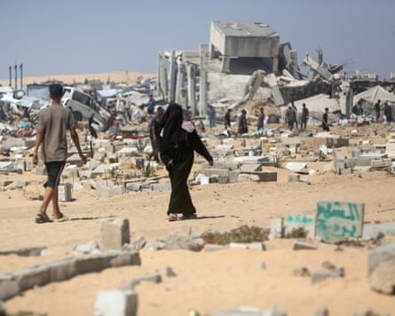

At least 798 people have been killed while seeking food at distribution points operated by the US- and Israeli-backed Gaza Humanitarian Foundation and other humanitarian convoys since the end of May, the UN human rights office (OHCHR) said on Friday.
The GHF, proposed by Israel as an alternative to the UN aid system in Gaza , has been almost universally condemned by rights groups for its violation of principles of humanitarian impartiality and what they have said could be complicity in war crimes.
“Up until the seventh of July, we’ve recorded now 798 killings, including 615 in the vicinity of the Gaza Humanitarian Foundation, and 183 presumably on the route of aid convoys,” the OHCHR spokesperson Ravina Shamdasani told reporters in Geneva.
Israel backed the GHF after claiming that Hamas diverted aid from the UN-led aid system, a claim for which the UN said there was no evidence. The private company employs American mercenaries to oversee four food distribution zones, as opposed to the previous 400 non-militarised zones run under the UN system.
The GHF said the UN figures were “false and misleading” and denied that deadly incidents occurred at its sites. “The fact is the most deadly attacks on aid sites have been linked to UN convoys,” a GHF spokesperson said.
In Gaza, the GHF has become infamous for the near-daily shootings of people seeking food who have queued to receive meals since the group started operating in early May. Palestinians seeking food have to navigate a complicated set of instructions and stick to specific routes, as well as walk long distances to access the food sites. Even then there is no guarantee they will be safe.
On Friday medical charity Doctors Without Borders (MSF) said its teams in Gaza were witnessing “a sharp and unprecedented rise in acute malnutrition”, with the number of cases at its Gaza City clinic nearly quadrupling over the past two months.
On Friday, at least 10 people were killed and more than 60 injured when Israeli forces opened fire on a crowd in Rafah, southern Gaza, according to Ahmad al-Farra, the head of paediatrics at Nasser hospital in Khan Younis, which received the dead and wounded.
At least 15 Palestinians were killed overnight and on Friday by Israeli airstrikes in northern Gaza, including a strike on a school serving as a refugee shelter.
“The situation in the hospital was like it always is during massacres: extreme overcrowding, shortage of medical supplies and medicines, and a very high number of injured compared to the number of doctors,” saidFarra.
Treatment units were set up outside the hospital to cope with the influx of patients as hallways inside filled with the wounded.
The situation in the hospital, one of the few medical facilities still operating in southern Gaza, was made more difficult after the Israeli military operated in the surrounding areas overnight.
Doctors reported shells landing nearby and heavy gunfire on the outskirts of the hospital, with a number of patients arriving with gunshot wounds.
The areas around the hospital were filled with encampments for displaced people and witnesses said Israeli forces had stationed tanks and fired teargas at tents. Two residents reported Israeli soldiers in a nearby cemetery, while one said they saw the soldiers exhuming bodies there.
Palestinians inspect the destruction at a makeshift displacement camp and adjacent cemetery after a reported incursion by the Israeli military in Khan Younis.Photograph: AFP/Getty Images
Israeli forces withdrew from the surrounding areas in the morning, but Farra warned the hospital only had enough fuel for the next 48 hours unless new supplies arrived. Already, air-conditioning had to be shut off in the hospital to preserve power, amid the sweltering summer heat.
Nahla Abu Qursheen, a 35-year-old mother of four who fled the tanks on Thursday, said those who did return to the encampment found their tents destroyed. Pictures sent to the Guardian showed ruined tents amid deep furrows in the ground on Friday.
“I still don’t know what happened to our tent. We are still here on the street. Last night was very difficult – missiles and shelling. My children slept on top of each other, just to fit under a single piece of cloth,” Qursheen said, exhausted from sleeping in the street.
Israel has intensified its airstrikes on Gaza over the last week, as negotiators report a ceasefire deal is in sight, but not yet achieved.
The US president, Donald Trump, said on Wednesday he was optimistic a deal was possible this week or next, during the Israeli prime minister Benjamin Netanyahu’s visit to Washington. Hamas reportedly agreed to release 10 hostages of the 50 that remain, during the two-month ceasefire period.
Qatari mediators have warned a ceasefire will take time, as key stumbling blocks remain. Hamas wants assurances that Israel will not restart fighting as it did in mid-March after the first Gaza ceasefire, while Israel is seeking the complete expulsion of Hamas from the Gaza Strip.
Israel’s defence minister, Israel Katz, has floated the proposal of relocating the population to a “humanitarian city” in southern Gaza, which legal experts have described as a blueprint for crimes against humanity . Juliette Touma, the communications director for the UN agency for Palestinian refugees, Unrwa, said such a plan would worsen the humanitarian crisis and forcibly displace people in Gaza.
The war in Gaza started after Hamas-led militants killed more than 1,200 people in Israel and took more than 250 hostages on 7 October 2023. More than 57,000 people have been killed during Israel’s 21 months of military operations there.
As negotiations drag on, people in Gaza say they are losing hope. “They say there is a truce, they say! Every day they say it will end today or tomorrow, but it’s all lies. Wake up and stop this war. Enough of the death, the hunger and the constant displacement,” Qursheen said.